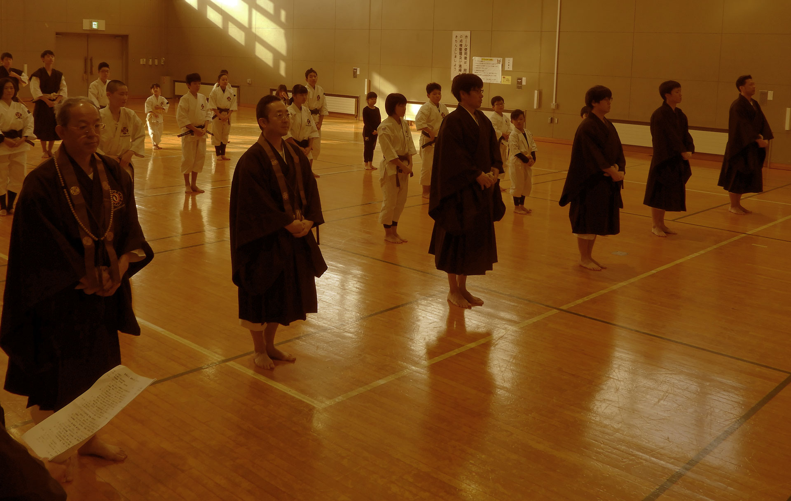
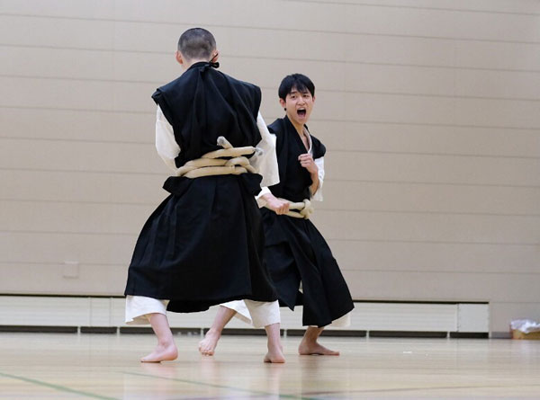
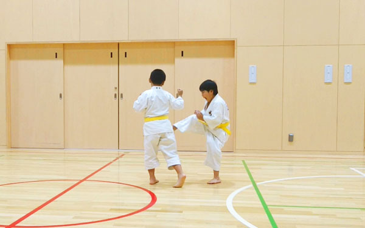
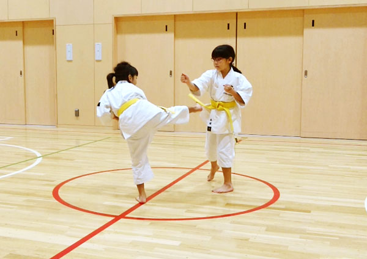

少林寺拳法とは
人づくりの行
少林寺拳法は1947年、日本において宗 道臣が創始した「人づくりの行」です。 自分の身体と心を養いながら、他人とともに助け合い、幸せに生きることを説く「教え」と、 自身の成長 を実感し、パートナーとともに上達を楽しむ「技法」、 そして、その教えと技法を遊離させず、相乗的なスパイラルとして機能させる「教育システム」が一体となっています。
人間は生まれながらに、どのようにも成長してゆける可能性を秘めています。 少林寺拳法は、その可能性を信じて自分を高め続けられる人、 周囲の人々と協力して物心両面にわたって豊かな社会を築くために行動できる人を育てています。
護身の技術
少林寺拳法の技術は、突きや蹴りの「剛法（ごうほう）」、投げや関節をとる「柔法（じゅうほう）」などで技術体系化されていますが、 それはすべて「相手の攻撃に対して、どう防御・反撃するか」という技術で成り立っています。 つまり、自分から先制攻撃をする武道ではありません。少林寺拳法の構え（かまえ）は攻撃態勢の構えではなく、 受けの構えとなっています。

これは自ら相手を傷つける事は絶対しない、しかし、降りかかる火の粉は振り払い、自分の身は自分で守るという思想があるからです。
少林寺拳法の技法は弱者が強者から身を守るための護身の技術であり、強者になるための攻撃テクニックではありません。 相手を押さえたり攻撃をするために肉体を強くする必要もなく、 また相手の攻撃から身を守るための肉体づくりも必要ないとされています。 肉体をつくらなくても相手の攻撃に対処するだけの技術が少林寺拳法にはあります。
守主攻従
少林寺拳法は「守主攻従（しゅしゅこうじゅう）」という原則の中で練習が行わています。相手がこうきたら、 こう受けて技を出す、というものです。 少林寺拳法の思想は、相手を倒すよりも、まず身を守る事が第一。したがってすべての技の組み立ては、 まず受けから始まり、完全な防御を行ったあと、反撃に転ずるという形で構成されています。

ただ「守主攻従」とは「防御のほうが攻撃よりもすぐれている」という意味ではありません。
さまざまな格闘技の中でも、少林寺拳法のは技の数が多い武道です。しかも、相手の攻撃がこうきたら、 まず受けてから完全に防いで反撃するという形でなりたっているため、 相手が先に手を出してきた方が有利という言い方もできるほど守り主体の技術でなりたっています。 少林寺拳法が攻撃を受けて立つという「護身の技術」といわれるのは、このような理由からです。
剛柔一体
少林寺拳法の技は剛法（突く、打つ、蹴る等）と柔法（投げる、固める、圧す、締める等）の二法があります。 相手からは必ずしも打撃でくるとは限りません。 胸ぐらをつかまれたり、腕をつかんで引っ張ったりと多種多様にあります。

これらに対応できる技が少林寺拳法にはあります。結果として練習バリエーションが多くなり、 楽しんで練習できるというのが長所でもあります。
組手主体
少林寺拳法には多くの技があります。その分、技を学ぶ方法もバリエーションが出てきます。 自然に判断力、問題解決能力などの能力開発に役立ってきます。
こうした問題解決の判断と解決は、少林寺拳法の独特の練習方法である二人一組の組手によって生まれてきます。 技の練習をしていて上手くできないなどの問題が出てきた時に、二人で考え合って解決していったり、 もしくは指導者に確認して、一緒になって解決していこうというやり方です。 このような二人一組の練習方法を組手主体（くみてしゅたい）といいます。
少林寺拳法は組手主体の練習方法を原則としています。 攻防の技術に必要な間合い、虚実、技の変化を習得するためには、 1人でサンドバックを叩いてできるようになるものではありません。 常に相手と一緒になって練習する事によって身に付けていきます。

二人一組で練習する中で、相手の欠点と長所を発見し、お互いの欠点を克服し、 さらに長所を伸ばすために協力しあう。 そして相互の技を高めていくところに重点が置かれています。